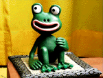
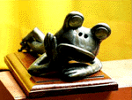
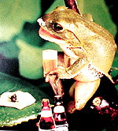

カエルのモロー君、分譲開始！全身像中心に七態！  【福岡かえる展事務局】売り出しは、福岡かえる展インターネット販売所で、発売開始します。なにしろ世の中はお中元のシーズンでしょ。このタイミングに合わせて、分譲開始なんて、いいではないか。上司や、お世話になった先輩などへの贈答品は、モロー君で決定だぞおおお。それぞれひつつづつしかないので、決断したら、気に入ったモロー君を即座に購入しましょー。一瞬の迷いが今生の別れぞ！
発売開始２日目で完売！【福岡かえる展事務局】分譲の告知とともに、モロー君の引取先は、決まりました。４日未明の発売開始から引き合いが相次ぎ、６日午前中で完売しました。みなさんりがとう。モロー君の完売御礼！【東京発=モローの父・寺井同志記者】なんと２日で完売ということで一番驚いてるのは作者本人ではないでしょうか。それなりに手間と時間がかかったとはいえ、やはり大金を出して買って下さるみなさんどうもありがとうございます。→さらに詳しいメッセージは、コチラに！！福岡かえる展の写真焼き増し受付中【福岡かえる展事務局】６月に開催した福岡かえる展の写真を焼き増しします。各ページの写真のうち欲しい写真横についているa-03.jpgなどのファイル名と枚数を教えて下さい。申し込みは、kaeru@kerokero.comへ。お届け先の住所、本名なども忘れずに！受付期間は、８月３０日までです。カエル暑中見舞いゲコゲコ到着！ 【福岡発=げこげこ大王直筆】カエルの知人からいただく暑中見舞いは、当然カエルデザインなのであるが、カエルが蝿を肴に、ビールを飲んで、口元にビールの泡をつけているはがきがあるなんて、びっくりしたぞ。どうやって撮影したんだろ。北海道のピョン吉同志よ。ありがとー。北海道は、真夏でも氷点下二〇度くらいあるのだろうか。九州は、一日中、池の中にいないと、皮膚が乾燥してひからびてしまう猛暑続きなので、うれしいぞー
ぷららホームページでカエルキャラの名前募集！【東京発=とことこ同志記者】ぷららホームページで占いの泉というコーナーが開設され、そのキャラが二匹のカエルになってます。そのキャラのネーミング募集をしています。結構かわいいカエルちゃんです。一度見てください。
ゲーム業界もカエルキャラ続々！【福岡発=kei-f同志記者】ゲーセンや家庭で大人気の話題のダンスアクションゲーム、コナミの「Dance Dance Revolution」の第２弾「Dance Dance Revolution 2nd Remix」の登場キャラクターにカエル少女がいたのですっっっ!カエルのかぶりモノをかぶって、気持ちよさそうに踊っている少女のキャラクター!!彼女の名前は「おしゃれずきん２号さん」。デザイナーさんの話によるとずきんちゃんのチャームポイントは「かえる。あと、羽根。」だそうです。 さらにはビクターソフトから「かえるの絵本〜なくした記憶を求めて〜」が発売されるそうですっっっ!このゲームは呪いでカエルになった主人公がその呪いを解くために冒険に行くという内容らしいですが、そのままカエルになってゆったり人生を送るのも良いかなと思ってしまいました…
投稿採用者に武功徽章を授与！ |
かえる古新聞過去に取り上げた記事を見出し付きで一覧したい人は、ここをクリック◆創刊号を見る◆先週号を見る◆話題の号を見る◆かえる新聞の昔を読む
|
私も入っています。。全国かえる奉賛会
大王様に会うには、このバナーをクリック。ずっと奥に写真館があるぞ。全国かえる奉賛会に入会するには、自分のホームページのどこかに、下の部分を追加するとバナーがリンク付きで表示されるぞ。どんどん入会しましょー |


|